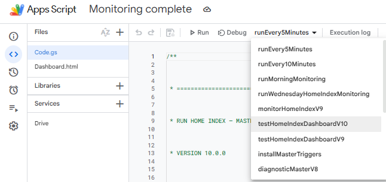

Collect
Bring together authorised signals from dashboards, jobs and tracking tools.
Bring recurring checks together and turn detected differences into clear operational messages.

Daily monitoring relied on several sources and manual checks: business indicators, processing status, alerts and incident tracking. Teams needed a usable summary without notification overload.
Create a simpler entry point for recurring checks while separating actionable information from alert noise.
Bring together authorised signals from dashboards, jobs and tracking tools.
Compare current values against the last known values and flag changes.
Make messages understandable with context and priority.
Share a concise team-channel summary while limiting duplicate alerts.
A workflow for recurring checks, indicator comparisons and alert summaries. No quantified time saving has been validated.
Figures are from shared operational reviews. Their scope and permission for public use must be verified before publication.
Good automation is not about generating more alerts: it helps teams identify what truly needs action. No quantified time savings are claimed without validated measurements.